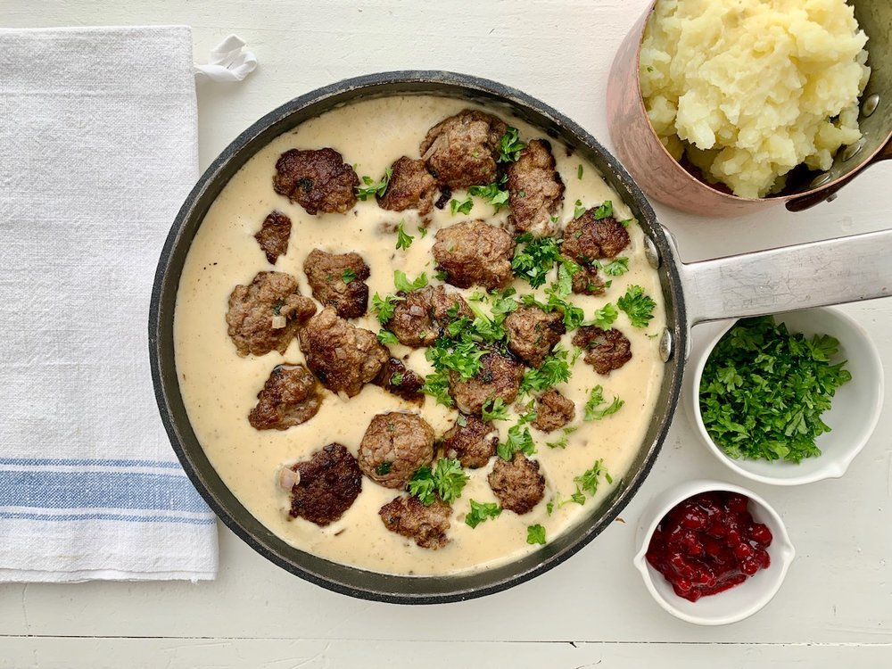

Swedish meatball dinner

Description
Swedish Meatballs or köttbullar are a classic dish from Sweden, characterized by a mixture of beef and pork with
strong spicing,
usually involving allspice, and served in a heavy gravy that lands somewhere on the spectrum between
American beef gravy and country-style white gravy.
These are traditionally served with a lingonberry jam in Sweden.
This is an old family recipe for Swedish Meatballs. It is simple to make and goes well with egg noodles or mashed potatoes.
It creates a serving for 4-6 people.
The prep and cook time is about 40-45 minutes.
The relish adds a sweet taste to the meatballs, but doesn't overpower with its flavor provided it is used in the proper amount.
I would suggest serving this with mashed potatoes or perhaps egg noodles. You may add the meatballs back into the gravy or keep the gravy on the
side, depending on the tastes of your guests.
Ingredients
Meatballs
- 1 and a half lb ground beef (80-85% lean is ideal, the 90% and higher are too lean and make for a dryer meatball, the less lean kind is too greasy)
- 1 cup plain bread crumbs
- 1/4 cup of sweet dill rellish
- 1/4 cup sour cream
- 2 eggs
Gravy
- 4 regular size cans of cream of mushroom soup
- 1 tsp Gravy Master
- 3 tbsp Worcestershire sauce
- 3/4 cup of sour cream
Steps
- Combine the ground beef along with the bread crumbs, relish, sour cream, and eggs until thoroughly mixed.
- In a large frying pan, put enough water to cover the bottom of the pan. Roll the mixture into meatballs and place into the frying pan.
- Allow the meatballs to cook on a medium temperature for 10-15 minutes or until thoroughly cooked.
- Once cooked, put the meatballs aside in a bowl and combine the drippings from the frying pan with the cans of mushroom soup,
the gravy master, and Worcestershire sauce in a large pot.
- Stir the gravy, add water as needed to obtain the right consistency. The gravy should be a medium brown color.
Once it reached a boil turn the heat down to a simmer and add the sour cream. Stir until mixed.
Back